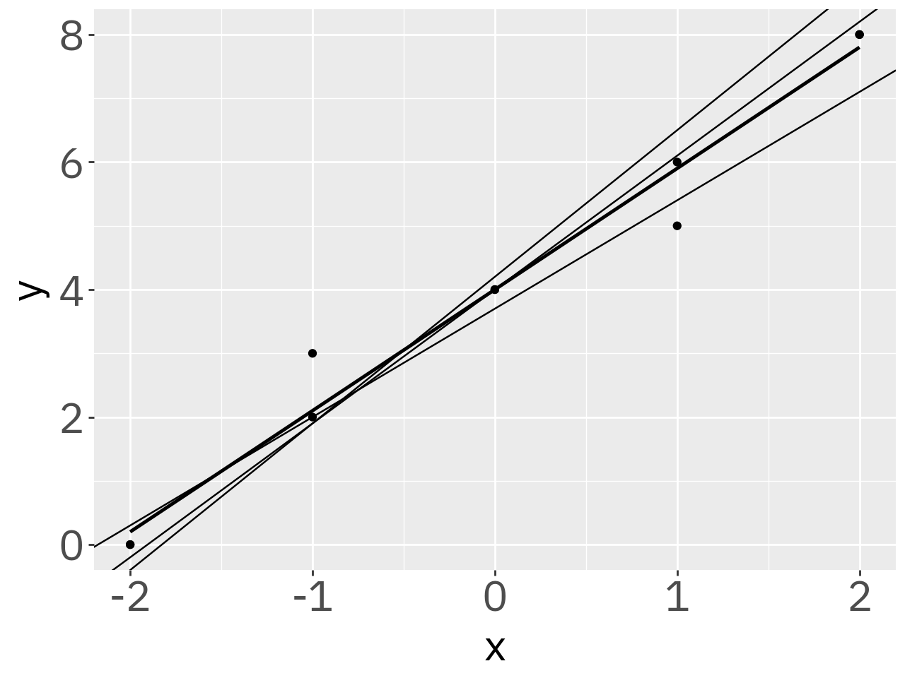

1
4
9
16Construção de Algorítmos e
Programação
Thiago Pires
–
–
Introdução Python
Variáveis
Na programação, variáveis são nomes que representam valores que podem ser manipulados durante a execução de um programa. Elas são elementos básicos, pois armazenam os dados que são necessários para o algoritmo.
Condições
Condições na programação são expressões que podem ser verdadeiras ou falsas, e que são utilizadas para controlar o fluxo de execução de um programa.
Exercício:
- Altere o valor de
xpara que caia na condição alternativa. - Use o
elifpara construir uma terceira condição
Repetições
São comandos que são utilizados na programação quando se deseja repetir, determinada parte do código, mais de uma vez. Ou seja, ao invés de escrevermos o mesmo código duas ou mais vezes, utilizamos uma estrutura de repetição
Repetições
Acumuladores
Um acumulador é uma variável que acumula valores durante as iterações de um laço
Exercício
- Reconstrua a rotina para que ela acumule o produto da mesma sequência gerada
Estrutura de dados 1
As estruturas de dados servem para organizar, manipular e acessar dados em diversos formatos
Lista
Uma lista é uma estrutura de dados que armazena uma sequência de valores, também chamados de elementos ou itens. Para extrair um elemento de uma lista pode usar a indexação numérica
Lista
Utilizando for
O for é uma forma mais prática de trabalhar com repetições quando estamos operando sobre uma lista
Quando tanto a entrada quanto a saída é uma lista podemos reescrever o for no que chamamos de list comprehention
Tupla
Uma tupla é uma coleção ordenada e imutável de itens, semelhante a uma lista, mas cujos elementos não podem ser alterados, adicionados ou removidos após sua criação. É uma estrutura de dados útil para agrupar informações relacionadas, como coordenadas de um ponto (x, y), e é representada por valores separados por vírgulas, geralmente entre parênteses.
Dicionário
Um dicionário Python é uma coleção de pares chave-valor, onde cada chave é única e usada para acessar um valor específico, semelhante a um glossário. Diferente das listas, você não usa um índice numérico, mas sim uma chave para encontrar os dados. Os dicionários são mutáveis, permitindo adicionar, alterar ou remover elementos após sua criação.
Conjunto
Um set (conjunto) é uma coleção não ordenada e mutável de elementos únicos. Ele remove automaticamente duplicados e é eficiente para operações como verificação de pertinência de um elemento ou a realização de operações matemáticas de conjuntos, como união ou interseção.
Algoritmos
Um algoritmo é um conjunto de instruções finitas para a realização de uma tarefa.
Pesquisa sequencial
Fazendo uma busca sequencial de um item dentro da lista.
Um exemplo
Pesquisa binária
A pesquisa binária é um algoritmo eficiente para encontrar um elemento em uma lista ordenada. Ela funciona dividindo repetidamente a lista ao meio e comparando o valor do meio com o valor que estamos procurando, descartando metade da lista a cada passo.
Pesquisa binária
- Comece com os índices do início e do fim da lista.
- Encontre o elemento do meio.
- Compare o valor do meio com o valor procurado:
- Se for igual, encontrou!
- Se o valor procurado for menor, repita a busca na metade esquerda.
- Se for maior, repita na metade direita.
- Repita até encontrar o valor ou até que a sublista esteja vazia.
Complexidade de tempo do algoritmo
A complexidade Big O (ou notação assintótica) é uma forma de descrever o comportamento de um algoritmo em termos de tempo ou espaço conforme o tamanho da entrada cresce. Ela não mede o tempo exato de execução, mas sim como o tempo cresce com o aumento da entrada.
Imagine que você tem um algoritmo que precisa processar uma lista de números. A complexidade Big O te diz quantas operações/tentativas (aproximadamente) ele vai fazer à medida que a lista cresce.
Complexidade de tempo do algoritmo
Na pesquisa binária, a cada passo você divide a lista pela metade. Isso significa que o número de passos cresce logaritmicamente com o tamanho da lista ou \(O(log(n))\):
- Lista com 8 elementos → no máximo 3 passos (porque \(log_2 8 = 3\))
- Lista com 1000000 elementos → no máximo 20 passos (porque \(log_2 1000000 \approx 20\))
Na pesquisa sequencial, o número de tentativas é igual ao número de elementos na lista \(O(n)\)
- Lista com 8 elementos → no máximo 8 passos
- Lista com 1000000 elementos → no máximo 1000000 passos
Exercícios com pesquisa binária
- Quantos números primos são menores que 67
primos = [2, 3, 5, 7, 11, 13, 17, 19, 23, 29, 31, 37, 41, 43, 47, 53, 59, 61, 67, 71, 73, 79, 83, 89, 97]- Qual o nome associado ao número 256 e quantas tentativas foram feitas? Quantas tentativas seriam em uma pesquisa sequencial?
lista = [
(3, 'Ana'), (10, 'Bruno'), (15, 'Carlos'), (18, 'Daniela'), (19, 'Eduardo'),
(28, 'Fernanda'), (33, 'Gustavo'), (35, 'Helena'), (43, 'Igor'), (48, 'Juliana'),
(58, 'Kleber'), (83, 'Larissa'), (84, 'Marcos'), (86, 'Natália'), (97, 'Otávio'),
(104, 'Patrícia'), (106, 'Rafael'), (115, 'Sabrina'), (120, 'Tiago'), (122, 'Vanessa'),
(127, 'Amanda'), (143, 'Breno'), (147, 'Camila'), (149, 'Diego'), (151, 'Eliane'),
(175, 'Fabiano'), (179, 'Gabriela'), (184, 'Henrique'), (187, 'Isabela'), (194, 'João'),
(199, 'Karen'), (201, 'Leonardo'), (211, 'Mirela'), (213, 'Nicolas'), (232, 'Olívia'),
(241, 'Pedro'), (244, 'Queila'), (246, 'Rodrigo'), (256, 'Simone'), (258, 'Túlio'),
(259, 'Ursula'), (261, 'Victor'), (269, 'Wesley'), (273, 'Xênia'), (278, 'Yasmin'),
(280, 'Zeca'), (288, 'Alana'), (291, 'Caio'), (292, 'Diana'), (294, 'Fábio')
]Ordenação por seleção
Suponha que você tenha um monte de músicas no seu computador. Para cada artista, você tem um contador de plays
Você quer ordenar uma lista de artistas, do artista mais tocado para o menos tocado, para que possa categorizar os seus artistas favoritos. Como pode fazer isso?
A ordenação por seleção é um algoritmo de ordenação simples que funciona selecionando repetidamente o menor elemento de uma lista não ordenada e movendo-o para o início da parte ordenada da lista.
| 🎵 | Contador de plays |
|---|---|
| Adoradores 5 | 95 |
| Anthony Evans | 78 |
| Arautos do Rei | 136 |
| Avalon | 111 |
| Cain | 48 |
| Grupo Versos | 101 |
| Novo Tom | 58 |
Ordenação por seleção
Recursividade
Recursividade é um mecanismo de programação que permite que uma função ou objeto se refira a si mesmo. Em outras palavras, uma função recursiva é uma função que se define em termos de si mesma.
Fatorial
Fibonacci
21
Soma acumulada
Quicksort
O
quicksorté um algoritmo de ordenação. Este algoritmo é muito mais rápido do que a ordenação por seleção e é muito utilizado na prática. Por exemplo, a biblioteca padrão da linguagem C tem uma função chamadaqsortque é uma implementação doquicksort. Este algorítmo utiliza a estratégia dividir para conquistar.
Qual é o array mais simples que um algoritmo de ordenação pode ordenar? [] ← array vazio e [20] ← array com um elemento.
Quicksort
Aplicações
Consultando o endereço através do CEP
import requests
# Função que fará requisição à API
def consulta_cep(cep):
url = f"https://viacep.com.br/ws/{cep}/json/"
res = requests.get(url)
res = res.json()
return (res['logradouro'], res['uf'])
# Lista de CEPs para consulta
lista_cep = ["13186642",
"13178574",
"13188020",
"13184321",
"20720293"]
[consulta_cep(cep)[0] for cep in lista_cep if consulta_cep(cep)[1] == "SP"]Consultado a cotação do Dólar
https://dadosabertos.bcb.gov.br/dataset/dolar-americano-usd-todos-os-boletins-diarios
import requests
def cotar(data):
url = f"https://olinda.bcb.gov.br/olinda/servico/PTAX/versao/v1/odata/CotacaoDolarDia(dataCotacao=@dataCotacao)?%40dataCotacao='{data}'&%24format=json"
res = requests.get(url)
res = res.json()
return res['value'][0]['cotacaoVenda']
cotar("08282024")5.5315
Esta função só funciona para dias úteis excluindo sábado domingo e feriado, como poderíamos modificar para que caso faça a cotação em um dia não útil a função traga a última cotação válida.
Consultado a cotação do Dólar
Para resolver este problema precisamos ententender como o Python lida com datas. É possível transformar uma string "08122024" em um tipo de dado datetime. O argumento "%m%d%Y" é para identificar como a estrutura da data está sendo recebida - mês, dia e ano
datetime.datetime(2024, 8, 12, 0, 0)Convertendo a str em um tipo de dado datetime é possível fazer algumas manipulações que são apenas possíveis com este tipo. É possível descobrir qual o dia anterior à "08122024"
Consultado a cotação do Dólar
Para retornar de um tipo datetime para uma string, com a estrutura "%m%d%Y",pode-se utilizar a função strftime
Consultado a cotação do Dólar
Nos dias não úteis a API retorna uma lista vazia na chave value
data = "09012024"
url = f"https://olinda.bcb.gov.br/olinda/servico/PTAX/versao/v1/odata/CotacaoDolarDia(dataCotacao=@dataCotacao)?%40dataCotacao='{data}'&%24format=json"
res = requests.get(url)
res = res.json()
print(res){'@odata.context': 'https://was-p.bcnet.bcb.gov.br/olinda/servico/PTAX/versao/v1/odata$metadata#_CotacaoDolarDia', 'value': []}Consultado a cotação do Dólar
import requests
def cotar(data):
url = fr"https://olinda.bcb.gov.br/olinda/servico/PTAX/versao/v1/odata/CotacaoDolarDia(dataCotacao=@dataCotacao)?@dataCotacao='{data}'&$format=json"
res = requests.get(url)
res = res.json()
if res['value']:
return res['value'][0]['cotacaoVenda']
else:
dia_anterior = datetime.strptime(data, "%m%d%Y") - timedelta(1)
dia_anterior = datetime.strftime(dia_anterior, "%m%d%Y")
return cotar(dia_anterior)
[cotar(i) for i in ["09022024", "09012024", "08312024", "08302024", "08292024"]][5.623, 5.6562, 5.6562, 5.6562, 5.6358]Monitoramento da frota de ônibus
A API do Olho Vivo provê informações em tempo real do monitoramento da frota de ônibus da cidade de São Paulo. Para ter acesso:
Monitoramento de frota de ônibus
Autenticação
import os
import requests
from dotenv import load_dotenv
load_dotenv("../.env")
s = requests.Session()
s.post(
f"http://api.olhovivo.sptrans.com.br/v2.1/Login/Autenticar?token={os.getenv('SPTRANS_TOKEN')}"
)- 1
- Ler o arquivo tendo o token como variável de ambiente
- 2
- Persistir uma sessão após autenticar
- 3
-
Fazer uma requisição com
postincluindo o token
True<Response [200]>Monitoramento de frota de ônibus
Busca por linhas segundo termos
linhas_lapa = s.get(
"http://api.olhovivo.sptrans.com.br/v2.1/Linha/Buscar?termosBusca=Lapa"
)
linhas_lapa = linhas_lapa.json()
linhas_lapa[:3]- 1
-
Utilizando o método
getpara requisitar as linhas de ônibus segundo a busca pelo termo “Lapa” - 2
- Mostrando uma lista com a 3 primeitas linhas encontradas
[{'cl': 841,
'lc': False,
'lt': '118Y',
'sl': 1,
'tl': 10,
'tp': 'LAPA',
'ts': 'LAUZANE PAULISTA'},
{'cl': 33609,
'lc': False,
'lt': '118Y',
'sl': 2,
'tl': 10,
'tp': 'LAPA',
'ts': 'LAUZANE PAULISTA'},
{'cl': 2273,
'lc': False,
'lt': '119L',
'sl': 1,
'tl': 10,
'tp': 'TERM. LAPA',
'ts': 'VL. SULINA'}]Monitoramento de frota de ônibus
Busca por paradas
res = s.get(
"http://api.olhovivo.sptrans.com.br/v2.1/Parada/BuscarParadasPorLinha?codigoLinha=2506"
)
paradas = res.json()
paradas[:3]- 1
-
Requisição das paradas de ônibus com o nome, endereço e coordenada segundo o código da linha (as chaves
clna saída anterior) - 2
- Lista com as informações das 3 primeiras paradas
[{'cp': 7014417,
'np': 'ANGELICA B/C',
'ed': 'AV ANGELICA',
'py': -23.534564,
'px': -46.654302},
{'cp': 60016784,
'np': 'PARADA PALMEIRAS B/C',
'ed': 'R PADRE ANTONIO TOMAS/ AV POMPEIA',
'py': -23.525799,
'px': -46.679251},
{'cp': 60016786,
'np': 'ANTARTICA B/C',
'ed': 'PC SOUSA ARANHA/ VDTO ANTARTICA',
'py': -23.526523,
'px': -46.673588}]Monitoramento de frota de ônibus
Paradas de ônibus no mapa
Monitoramento de frota de ônibus
Posições em tempo real
- 1
- Requisição da posição do ônibus segundo o código da linha informada
{'hr': '22:06',
'vs': [{'p': '12783',
'a': True,
'ta': '2024-09-27T01:05:47Z',
'py': -23.53531725,
'px': -46.653005,
'sv': None,
'is': None},
{'p': '12534',
'a': True,
'ta': '2024-09-27T01:06:10Z',
'py': -23.547649,
'px': -46.641011500000005,
'sv': None,
'is': None},
{'p': '12592',
'a': True,
'ta': '2024-09-27T01:05:57Z',
'py': -23.5325365,
'px': -46.657965250000004,
'sv': None,
'is': None},
{'p': '12782',
'a': True,
'ta': '2024-09-27T01:05:45Z',
'py': -23.520449499999998,
'px': -46.6996115,
'sv': None,
'is': None}]}Bot no Telegram
- Um bot poderá ser criado através de uma interação com o próprio bot do Telegram BotFather como mostrado na imagem
- É necessário definir um nome, username e em seguida obter um token para ser utilizado nas requisições
- Referência principal das APIs: https://core.telegram.org/bots/api#available-methods

Bot no Telegram
Obtendo updates
import requests
import os
from dotenv import load_dotenv
load_dotenv("../.env")
updates = requests.get(f"https://api.telegram.org/bot{os.getenv('TELEGRAM_TOKEN')}/getUpdates")
updates = updates.json()
updates["result"][-1]{'update_id': 80721953,
'message': {'message_id': 9,
'from': {'id': 1042885840,
'is_bot': False,
'first_name': 'Thiago',
'last_name': 'Pires',
'username': 'th1460',
'language_code': 'pt-br'},
'chat': {'id': 1042885840,
'first_name': 'Thiago',
'last_name': 'Pires',
'username': 'th1460',
'type': 'private'},
'date': 1726967971,
'text': 'Oi'}}Bot no Telegram
Enviando mensagem
requests.post(
url=f"https://api.telegram.org/bot{os.getenv('TELEGRAM_TOKEN')}/sendMessage",
data={"chat_id": 1042885840, "text": "Olá tudo bem?"}
).json(){'ok': True,
'result': {'message_id': 10,
'from': {'id': 7627305412,
'is_bot': True,
'first_name': 'thop',
'username': 'th0pbot'},
'chat': {'id': 1042885840,
'first_name': 'Thiago',
'last_name': 'Pires',
'username': 'th1460',
'type': 'private'},
'date': 1726968004,
'text': 'Olá tudo bem?'}}Matrizes
Matrizes
Matriz é uma tabela organizada em linhas e colunas no formato \(m\times n\), onde \(m\) representa o número de linhas (horizontal) e \(n\) o número de colunas (vertical).
A função das matrizes é relacionar dados numéricos. Por isso, o conceito de matriz não é só importante na Matemática, mas também em outras áreas já que as matrizes têm diversas aplicações.
\[ A = \begin{bmatrix} a_{11} & a_{12} & a_{13} \\ a_{21} & a_{22} & a_{23} \\ a_{31} & a_{32} & a_{33} \\ \end{bmatrix} \]
Matriz em python
Matriz pode ser definida como uma lista de listas
Criando uma matriz com list comprehension
[[0, 1, 2, 3], [0, 1, 2, 3], [0, 1, 2, 3], [0, 1, 2, 3]]
Acessando os valores de uma matrix
Matrizes com numpy
NumPy é uma biblioteca Python usada para trabalhar com arrays.
Calculando o inverso de uma matriz
Resolução de sistemas lineares
Resolução de sistemas lineares
\[ \begin{cases} 10x + 7y + 8z + 7w = 32\\ 7x + 5y + 6z + 5w = 23\\ 8x + 6y + 10z + 9w = 33\\ 7x + 5y + 9z + 10w = 31\\ \end{cases} \]
Regressão linear
A regressão linear é uma técnica estatística usada para prever o valor de uma variável com base no valor de outra variável. A variável que você deseja prever é chamada de variável dependente, e a variável que você está utilizando para prever o valor da outra variável é chamada de variável independente.
A forma matricial para se resolver uma regressão linear
\[ \hat{\beta} = (X'X)^{-1}X'y \]

Exercício
Aplicar a fórmula matricial da regressão nos dados a seguir
Os valores de X devem ser rearranjados para:
Leitura e escrita de arquivos
Leitura de arquivos
Leitura de arquivos
A estutura with serve para fechar de forma automática o arquivo que foi aberto com a função open
Escrita de arquivos
Escrita e leitura de arquivos com estruturas Python
Escrita